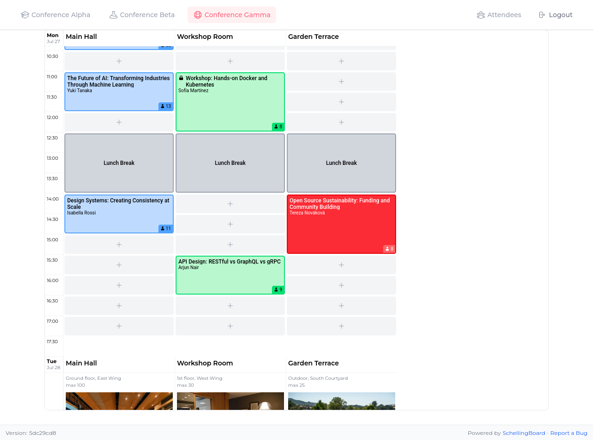

What is SchellingBoard?
SchellingBoard is an open-source web app for managing sessions at conferences and unconferences. Attendees propose sessions, vote on them, and hosts drag them onto a time-and-room grid to build the final schedule.
The name is a tongue-in-cheek reference to Schelling points — focal points that people converge on without coordination. SchellingBoard is the ironic opposite: explicit coordination through structured proposals and voting.
Features
- Session proposals Attendees submit and browse session ideas
- Voting Express interest before the schedule is set
- Scheduling grid Drag sessions onto a time / room grid
- Event phases Proposal → voting → scheduling with configurable dates
- Multi-event Host multiple events from one deployment
- Password protection Optional single-password gate for the whole site
Self-host in minutes
SchellingBoard runs on Node.js / Bun with an SQLite database — no
external services required. Clone the repo, set
DATABASE_URL, run migrations, and start the server.
See the
Hosting guide
for full instructions.